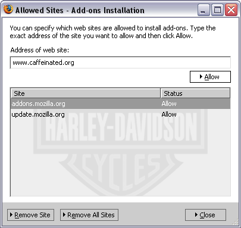
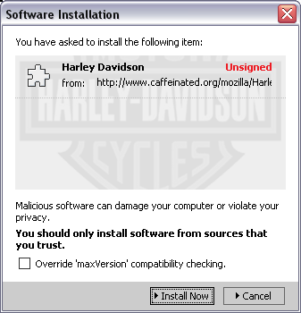
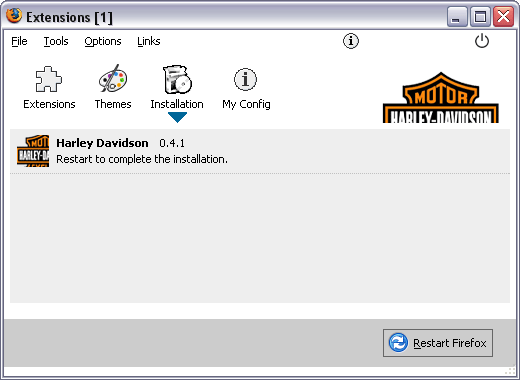
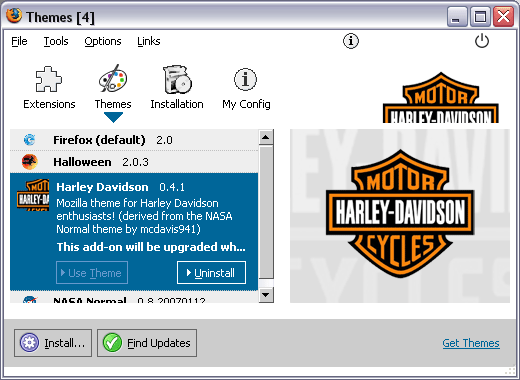

Installing a Mozilla theme from this site
- Click on the "Install Now" link at my themes page
- If this is your first time to install a theme from caffeinated.org, then you might need to
add this web site to your Allowed Sites list. If so, you'll see a warning at the top of your
frame mentioning this. Click the Edit button on its right. This will open up a window like
this:

If you don't need to add this site, then skip the next step.
- Click Allow to add this site to your allowed list. Then Close and click the
"Install Now" link once more.
- You should see the following window popup:

Click the Intall Now button.
- Once installation is complete, you should see this window popup:

- Click the Themes tab to see the list of themes installed on your system. You should
see this popup window now:

- Click on the Harley Davidson theme and click Use Theme button.
- Now restart your browser (making sure to close ALL instances of Mozilla, inclusing any
downloads in process).
- Voila!